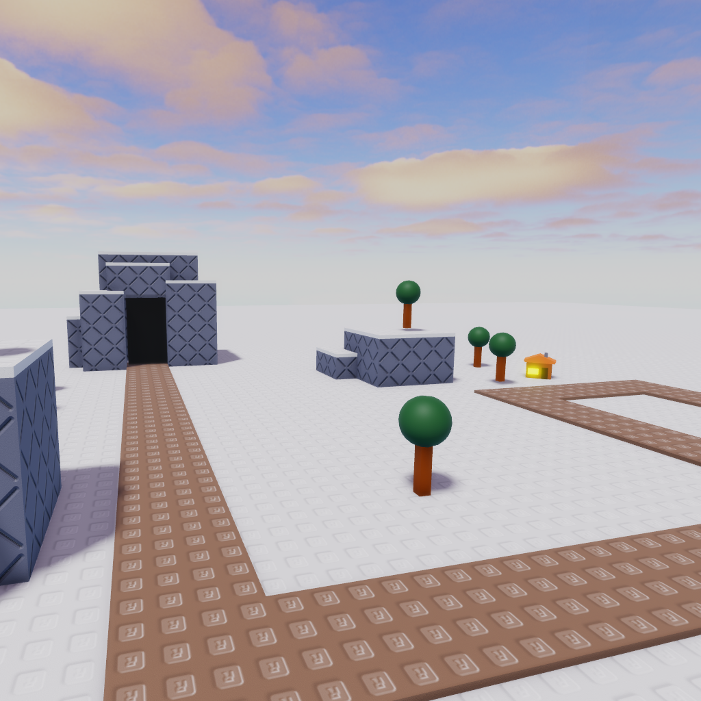

|  | |
| Length | 173 Studs |
|---|---|
| Cliffs | 3 |
| Date Added | December 15th, 2022 |
| Built By | coreyhsGames |
Winter is a medium/short snowy map with many trees and a couple houses. The map only has one small mountain being able to place 3-4 cliff towers. The map has multiple corners and sharp curves. This map is actually based off a old map from Tower Defense Simulator, Winter.